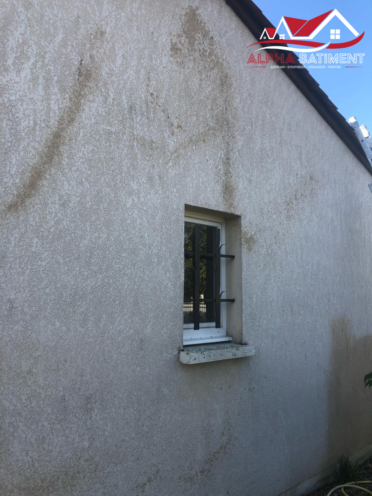

Entretien de toiture
Mousses, lichens, gouttières encombrées : un entretien régulier évite bien des urgences. Nous nettoyons et contrôlons votre toiture pour repérer les faiblesses avant qu'elles ne deviennent des fuites.

Ce qui est compris
- Démoussage de la toiture et traitement anti-mousse.
- Nettoyage des gouttières encombrées par les feuilles et débris.
- Contrôle visuel des tuiles, ardoises et solins pour repérer les points de faiblesse.
- Nettoyage de façade lorsque des traces d'humidité ou de mousse s'y sont installées.
Un geste préventif, pas du luxe
Les mousses retiennent l'humidité contre les tuiles et accélèrent leur usure ; une gouttière bouchée fait déborder l'eau contre le mur au lieu de l'évacuer. Un contrôle régulier permet de traiter ces points avant qu'ils ne provoquent une fuite ou une dégradation plus coûteuse.
Nous en profitons pour vous signaler tout élément à surveiller (tuile fissurée, solin fatigué) même s'il ne nécessite pas d'intervention immédiate. Un entretien régulier de la couverture évite bien des chantiers de rénovation prématurés.
Entretien de toiture près de chez vous
Notre entretien de toiture est disponible dans tout le secteur de Brive-la-Gaillarde et au-delà, en Dordogne comme en Corrèze.